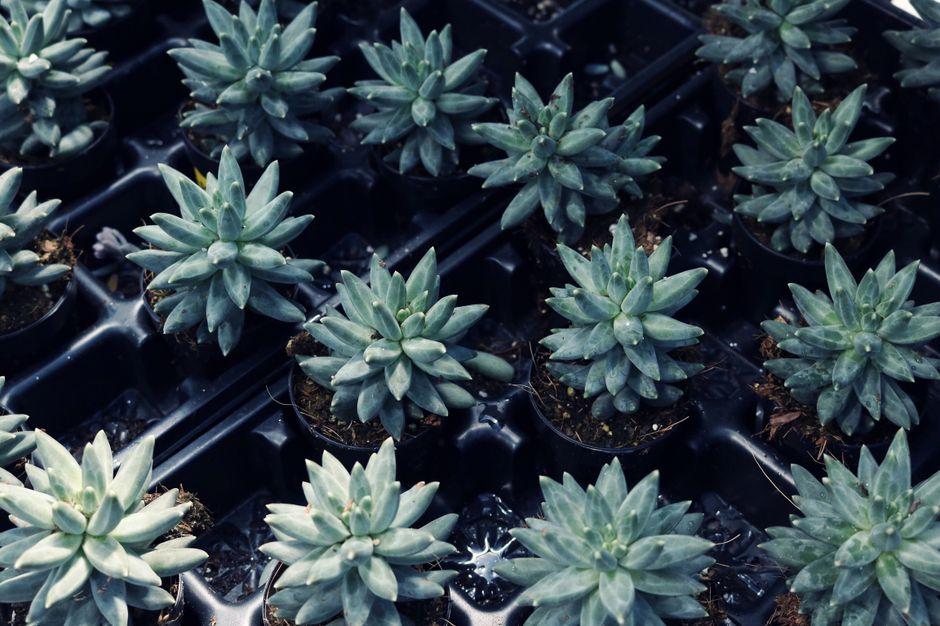

plantas de interior ideales para los principiantes
Si estás empezando a cuidar plantas en tu hogar, te presentamos 5 plantas de interior que no solo son fáciles de cuidar, sino que también se adaptan perfectamente a entornos iniciales. Estas plantas son ideales para aquellos que quieren sumergirse en el mundo de la horticultura sin excesos de trabajo. Vamos a ver cuáles son y cómo cuidarlas.

Photo: Madison Inouye / Pexels
1. La areca (Chamaedorea)
La areca, conocida también como palma del salón, es una excelente opción para principiantes. Su cuidado es sencillo y requiere poca atención. Solo necesitas asegurarte de que reciba al menos 4 horas de luz indirecta al día y mantengas el sustrato húmedo pero no mojado. La areca es resistente a las condiciones moderadas de humedad y temperatura.
2. La platanera (Schefflera)
La platanera es una planta que no solo llena tu hogar de un toque de verde, sino que también es muy fácil de mantener. Solo necesita una luz media y un sustrato que no se seque rápidamente. Además, es capaz de eliminar toxinas del aire, lo que la hace una aliada para mejorar la calidad del aire en tu hogar.
3. El arándano de la suerte (Crassula ovata)
El arándano de la suerte, también conocido como suculento de la suerte, es una planta que no requiere mucha atención. Es resistente a la sequía y solo necesita un riego ocasional. Puede tolerar condiciones de luz baja, aunque prefiere algo de luz indirecta. Este suculento es una opción excelente para aquellos que buscan algo que crezca lento pero seguro.
4. La fucsia de la suerte (Zamioculcas zamiifolia)
La fucsia de la suerte, o zamioculcas, es una planta que combina belleza con facilidad de cuidado. Solo necesita un riego ocasional y una ubicación en la que reciba luz indirecta. Su resistencia a la sequía y a la baja humedad la convierten en una planta ideal para los principiantes. Además, puede crecer hasta 1,5 metros de altura, lo que la hace un complemento decorativo en cualquier rincón del hogar.
5. La paz (Sansevieria trifasciata)
La paz, también conocida como espada de Sibérie, es una planta de interior muy fácil de cuidar. Es resistente a las condiciones de luz baja y a la sequía, por lo que solo necesita un riego ocasional. Su hoja triangular y el efecto de las bandas en su hoja la hacen una planta decorativa atractiva. Además, la paz es capaz de purificar el aire, lo que la hace una excelente opción para aquellos que buscan mejorar la calidad del aire en su hogar.
Conclusión
Cuidar plantas en casa puede ser una gran experiencia para principiantes, y estas 5 plantas de interior son una excelente manera de comenzar. No solo son fáciles de mantener, sino que también aportan un toque de vida y color a cualquier espacio. Recuerda, el cuidado de las plantas es un proceso que requiere paciencia y atención, pero con estos consejos, podrás disfrutar de un hogar más verde y saludable.